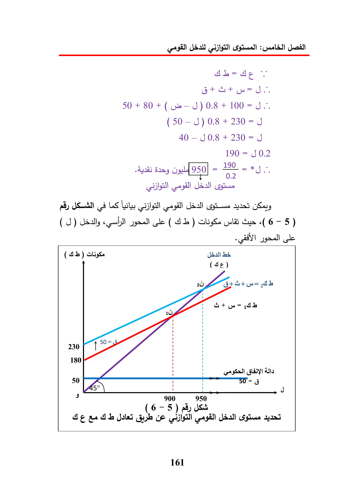

Bt+at
50
+
80
+
0.8
+
100=J~.
(50-
J)
0.8
+
40
—
30.8
+
230
=J
190
=
J0.2
U9
950
02
J
sll
aly
68
LS
Lily
yaad
(5)
dally
«cull
le
(db)
LS
(pli
Ge
(6-5)
A
le
(
db)
Gaal)
(4¢)
w=
wh
G+
ith
180
GLY
900
.
950
(6
—
5)
Be
ee
Gb
Ce
Syne
161